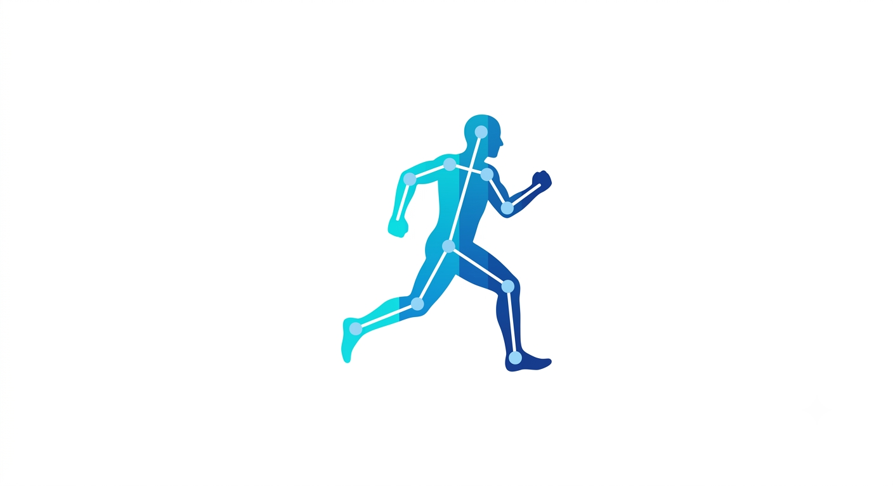
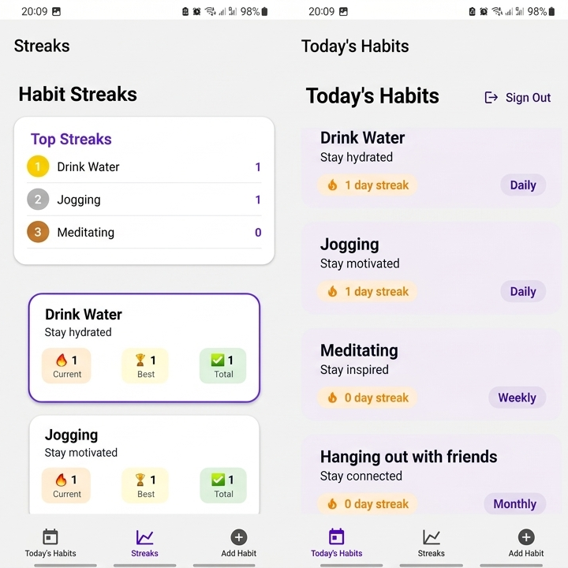
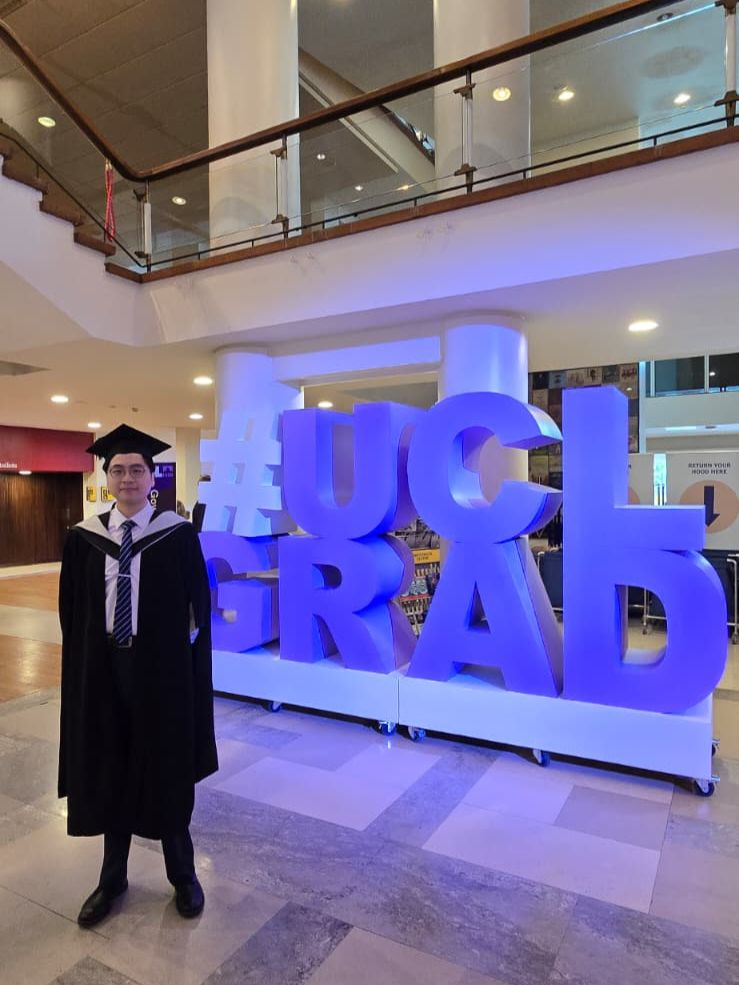
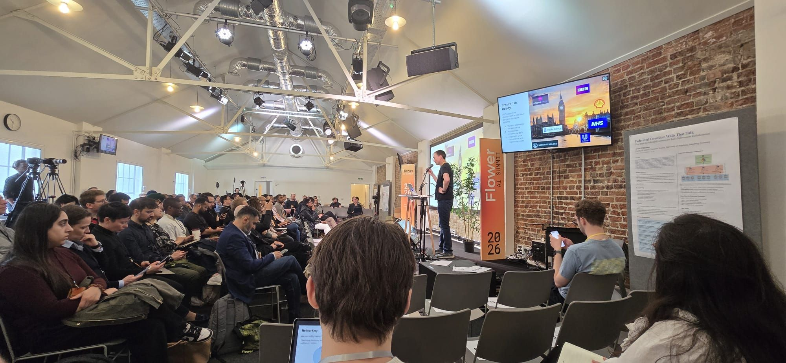
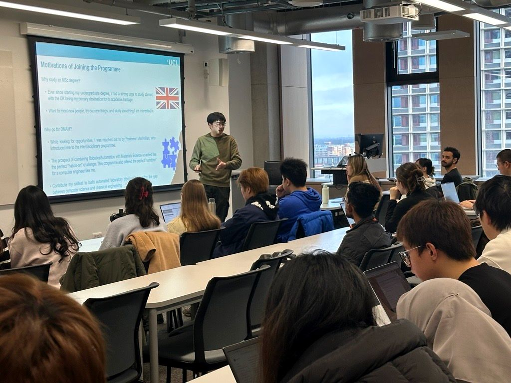

I build intelligent, data-driven software that blends robust AI engineering with elegant user experiences. Leveraging a deep background in multimodal models, computer vision, and full-stack development, I deploy systems that range from award-winning applications to high-performance web ecosystems. I care about writing maintainable code, optimizing performance, and engineering tools that matter.
I am a software engineer with 4+ years of experience building full-stack software applications. I started coding because I love making things — and I have never stopped. I believe the best software is built with empathy for the user, care for the codebase, and a healthy amount of curiosity.
Outside of work I enjoy exploring new technologies, attending academic talks, and tinkering with side projects. I am always happy to talk about tech, ideas, or anything in between.
The languages I think and build in
From model training to production deployment
Cross-platform apps and responsive interfaces
Server-side logic, databases, and integrations
From raw data to publishable insights
Deploy fast, ship confidently
Hardware integration and real-time systems
The things that matter in teams
An Android health app using MediaPipe for real-time human pose estimation and a self-trained kNN classifier for exercise tracking. Also captures PPG signals via the smartphone camera for pulse monitoring, with a local SQLite database for activity history.

A real-time desktop application that overlays skeletal tracking onto live video to analyse climbing technique. Tracks 33 body landmarks via MediaPipe Pose, with session management, dynamic UI scaling, keypad input support, and multi-language localisation.

A full-stack cross-platform mobile app for building daily habits. Features real-time streak tracking, habit management, user authentication, and a user-friendly UI — all backed by Appwrite's live database and auth services.

If you told me a year ago how much could change in 12 months, I wouldn't have believed you. 🏛️✨ Today, walking across the stage at the Royal Festival Hall in Southbank Centre, I officially closed out my chapter at UCL and UCL Chemical Engineering, graduating with my MSc in Digital Manufacturing of Advanced Materials with Distinction and Dean's List 🎓 . This degree has been a masterclass in resilience, systemic thinking, and innovation. From decoding complex material behaviours to architecture-level automation and digital workflows. The learning curve was steep, but the reward has been massive. I owe a massive debt of gratitude to my incredible professors and advisors. Thank you for constantly challenging my assumptions, sharing your immense expertise, and guiding me to push the boundaries of what is possible in modern engineering. To my incredible fellow grads: we actually did it. And to my family and friends: I couldn't have crossed this finish line without your unwavering support. I am excited to carry this momentum into the industry and help bridge the gap between advanced materials and digital intelligence. The next chapter starts now! 🚀🥂 hashtag#UCL hashtag#UCLGrad hashtag#ChemicalEngineering hashtag#MachineLearning hashtag#MastersDegree hashtag#Distinction hashtag#DeansList hashtag#ClassOf2025 hashtag#AcademicAchievement

I spent yesterday at the Flower Labs Flower AI Summit 2026, and the technical progress in Federated Learning of Large Language Model is staggering. It has become increasingly evident that the industry is pivoting away from the limitations of centralised data silos in favour of decentralised, privacy-preserving architectures that prioritise data sovereignty without sacrificing computational performance. My gratitude to Daniel J. Beutel, Nicholas Lane, and the entire Flower Labs team for cultivating such a forward-thinking environment. Engaging with S M Ruhul Kabir Howlader and Davide Cantoro further highlighted the collective drive to transform these privacy-preserving frameworks into a global standard for responsible innovation. We are witnessing the dawn of an era where intelligence is distributed, secure, and truly sovereign. hashtag#FlowerAISummit2026 hashtag#FederatedLearning hashtag#AI hashtag#DataSovereignty hashtag#Innovation

I was honored to present my Master's research, “Large Language Models to Characterize Metal‑Organic Framework (MOF) Structures,” to the Advanced Propulsion, Digital Manufacturing of Advanced Materials and Nature-Inspired Solutions MSc cohorts at UCL East yesterday. 🧑🏫 Huge thanks to Professor Solomon Bawa for the invitation and for organizing such a welcoming session. I am grateful for the opportunity to share my personal academic journey, research experiences, and future directions as a UCL alumnus. I hope everyone who attended found the session informative and that their questions on MSc research were fully addressed. 🎯 I am excited to keep collaborating with academia and industry partners to translate these findings into practical tools that accelerate materials discovery through AI integration. 🔁💡
I'm always open to interesting conversations — whether that's a new role, a collaboration, or just a chat about something you're building.